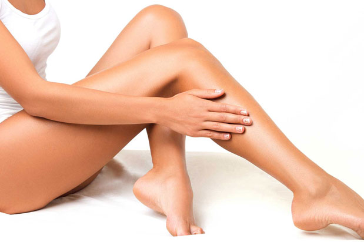

<div id="waxing">
    <div class="row">
        <div class="box">
            <div class="col-lg-12">
                <hr>
                <h2 class="intro-text text-center">
                    <strong>Отстраняване на нежеланото окосмяване чрез кола маска</strong>
                </h2>
                <hr>
                <div class="col-lg-5">
                    
                </div>
                <div class="col-lg-7">
                    <p>Днес жените имат голям избор отметоди за обезкосмяване:епилация, кола маска, депилация, бръснене, електроепилация,
                        фотоепилация.... Всеки от тях има своите предимства и недостатъци и е въпрос на личен избор на кой
                        вариант ще се спрете.</p>
                </div>
                <div class="row">
                    <div class="col col-lg-12">

                        <div>
                            <p>Гладката кожа е търсен ефект от векове назад. Още древните са използвали горещ восък за да отстраняват
                                нежеланото окосмяване. Този метод за премахване на нежеланото окосмяване по тялото дава най-добри
                                резултати. Подходящ е за всяко окосмяване. Ефектът е траен и запазва кожата ви гладка за
                                3-6 седмици.</p>
                            <p></p>
                            <h4>Безопасни ли са екстеншъните за мигли?</h4>
                            <p>Те са минали през много тестове, проби и дълги периоди на употреба преди да стигнат до вас. Изводите
                                са, че са безвредни и за естествените ви мигли, и за клепачите ви. Дори материалите, от които
                                е направено лепилото за апликиране на миглите, са включени в състава на множество хирургични
                                лепила, използвани за безшевно затваряне на оперативни рани.</p>
                        </div>
                    </div>
                </div>
                <div class="row">
                    <div class="col-lg-12">
                        <h4>Важни препоръки:</h4>
                        <p>Опазете миглите сухи за 24 часа;</br> Използвайте продукти за почистване на грим само на водна основа
                            – всичко мазно е забранено;</br> За да подсушите очите си след миене, използвайте хартиени салфетки,
                            като започнете с нежен натиск отдолу нагоре;</br> памучните тампони за грим е добре да се избягват;</br>
                            Не излагайте новите си мигли на силна топлина;</br> Не къдрете изкуствените си мигли с извивачка
                            за мигли. Те вече имат първоначална естествена извивка и всяко допълнително извиване е излишно
                            и може да повреди структурата им;</br> Не дърпайте миглите си, защото това може да причини окончателно
                            падане на естествените ви мигли;</br> Ако наистина е налага да използвате спирала, то ползвайте
                            единствено такава, предназначена за изкуствени мигли. Останалите спирали съдържат съставки, които
                            разтварят лепилото за мигли и вероятно вашите не след дълго ще паднат;</br> Ако все пак решите
                            да си сложите спирала, я поставете само от центъра на миглите до върха, за да избегнете зоната
                            на корените;</br>
                            За да почистите грима около очите си, е добре да използвате специален апликатор за почистване плюс четка за разресвне и разделяне
                            на миглите;
                        </p>
                    </div>
                </div>
            </div>
        </div>
    </div>
</div>